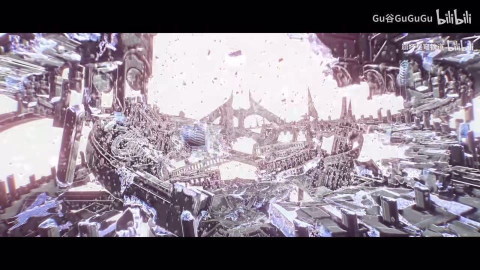
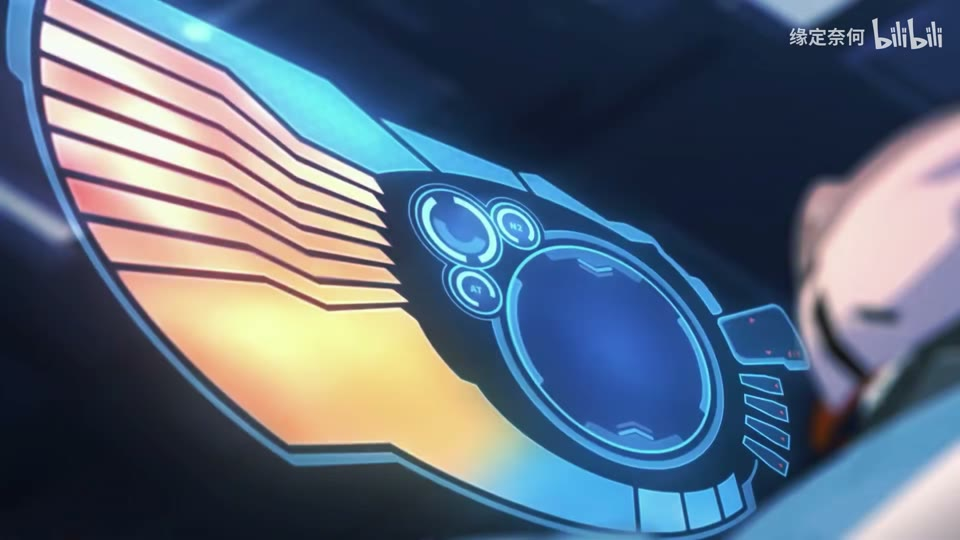

← 案例图谱H36 / 局部机制／局限参考
好久不见迷迷，还是说该叫你昔涟
Gu谷GuGuGu · 1.4万播放快照 · <10万 · B站原作 ↗
真人引子、眼脸小窗、反向重复与放射万花筒有机制参考价值；官方CG大场面不能作为新增后期证明。

约65.840秒 · 案例代表帧从画面里找依据
这一例先看什么
真人引子、眼脸小窗、反向重复与放射万花筒有机制参考价值；官方CG大场面不能作为新增后期证明。
审美判断
角色脸部拼贴的矩形层次清楚，部分暗景/强光段依赖原CG；官方水印和UI保留。
迁移到自己的题材
战斗、运动、竞速、预告、产品性能演示、情绪冲突的高潮。
教学提问：观众能指出谁在攻击、朝哪边、是否击中吗？哪些是原素材的动作，哪些才是新增剪接或合成？
带画面的分析单元
图像标出取样时间，对应观察中的关键状态。单帧不能独立证明运动，连续性请结合摘录。表达作用与应用场景是教学解读，复现路线是建议，不是原作者工程还原。
分析单元 01 / 0—12秒
真人引子／花窗／转游戏CG
实际观察
真人节目对谈接明亮花窗，再接角色战斗，字幕与多处游戏官方标识保留。
表达作用（教学解读）
通过变化与稳定的比例让信息有轻重。视觉密度来自切镜、版式与局部动画三个层面，不只靠刀数。
具体应用场景
所有形式；尤其高潮前的蓄力、解释段的阅读、回忆段的停留和快慢对照。
复现建议（非原作者工程还原）
语义选材和剪接、画幅黑边；花窗与战斗主要由原素材提供。
直出判断：剪接/黑边容易；原CG花朵和角色动作需素材
常见误用：全片等密度；把闪帧当新镜；高切速被当成质量分；没有稳定段供观众理解。
分析单元 02 / 12—25秒
人物矩形拼贴／局部遮挡／时间回摆
实际观察
大脸背景上小窗切换表情与Q版图；16.5转角色面部后，转头段出现重复/反向运动，24秒面部有块状分割。
表达作用（教学解读）
让多个时间、视角或人物关系同时出现；通过对位建立联系，而非只提高画面数量。
具体应用场景
记忆、对话、关系对照、主观视点、多人角色介绍、跨素材呼应。
复现建议（非原作者工程还原）
多视频层、矩形mask、短段重复或反向、条块错位；注意源片也可能已有时间/故障设计。
直出判断：矩形/重复反向/条块容易；需逐源对照新增归属
常见误用：窗口太多无主次，眼位错位、边框挤脸，层的出现没有叙事理由。
分析单元 03 / 25—54秒
金粒子／蓝天巨物／角色群像
实际观察
金色碎屑聚于手臂，蓝天城市的巨大光体与人物群像、暗殿对话等，原官方标识在画面可见。
表达作用（教学解读）
用运动方向、尺度和密度建立空气、空间或情绪；装饰层应服务焦点。
具体应用场景
回忆、季节、梦幻、寒冷、散场、能量爆发、文本聚散。
复现建议（非原作者工程还原）
原片选镜与基本调色，简化金屑可粒子叠加。
直出判断：简化粒子/调色容易；官方CG的大场面不能当UP代码可直出
常见误用：平均铺满；近远粒子大小与模糊无差别；粒子挡脸；用程序火星冒充纪实拍摄。
分析单元 04 / 54—68.8秒
环绕人物／多小窗／刀剑与城市崩解
实际观察
环形构图群像后，小窗覆盖暗景，接人物战斗和巨大建筑破碎。
表达作用（教学解读）
让多个时间、视角或人物关系同时出现；通过对位建立联系，而非只提高画面数量。
具体应用场景
记忆、对话、关系对照、主观视点、多人角色介绍、跨素材呼应。
复现建议（非原作者工程还原）
画中画遮罩、尺寸显隐、动作选镜；建筑崩解需源CG。
直出判断：小窗/显隐容易；精确战斗破坏难且来源为主
常见误用：窗口太多无主次，眼位错位、边框挤脸，层的出现没有叙事理由。
分析单元 05 / 68.8—78秒
放射万花筒／扫描线／二值化／闪白
实际观察
碎片场景被径向多重重复，红青横线与错位，继而多个黑白/彩色冲击帧，再接白色放射拼贴。
表达作用（教学解读）
短暂中断视觉连续性，强调接触、转折或心理断裂；其价值来自前后的对比。
具体应用场景
打击点、快速连接、记忆跳跃、段落转折；需要根据内容选择强度。
复现建议（非原作者工程还原）
极坐标分区镜像、径向复制、通道偏移、条纹、阈值/反色、短曝光变化。
直出判断：简化万花筒/扫描线/阈值容易；需控制闪烁和源图层清晰度
常见误用：把闪烁当节奏本身；没有稳定画面作参照；为掩盖动作不清持续加闪。
分析单元 06 / 78—96秒
竖卡陈列／抽卡界面／粒子
实际观察
角色卡由侧边进入，后为带返回字样的卡牌展示、紫雾与花瓣；录屏式界面提示仍在媒体。
表达作用（教学解读）
用运动方向、尺度和密度建立空气、空间或情绪；装饰层应服务焦点。
具体应用场景
回忆、季节、梦幻、寒冷、散场、能量爆发、文本聚散。
复现建议（非原作者工程还原）
源录屏选段，竖条mask和粒子可以另做；不能把整个抽卡界面当UP原创特效。
直出判断：简化竖卡/雾/花瓣容易；官方UI和卡牌美术需素材
常见误用：平均铺满；近远粒子大小与模糊无差别；粒子挡脸；用程序火星冒充纪实拍摄。
分析单元 07 / 96—116.033秒
白色晕染／粉色花海／金色麦田／片尾字卡
实际观察
白光后花海、粉发人物与暖麦田，微虚焦和亮部柔光，末白底粉色小字。
表达作用（教学解读）
把阅读顺序变成观看顺序；用字重、位置与停留表达强调、犹豫或压迫。
具体应用场景
观点短片、歌词视觉、人物宣言、章节、情绪高潮；先决定哪些词必须读懂，哪些只是纹理。
复现建议（非原作者工程还原）
源动画与画幅处理，简单模糊/柔光、白卡文字、淡出。
直出判断：柔光/白卡/淡出容易；原花海麦田角色动作需素材
常见误用：每个字都弹跳、整句停留不足、所有文字同时争主位。严肃叙事里无理由的回弹会削弱重量。
用连续画面核对
保留原研究的多段局部摘录。片段含音轨不代表已听审；本资料不评价音乐卡点或对白节奏。
短时变化怎样理解
14–18秒两次主连接，17.8–19.8秒一次；68.8秒窗阈值和故障混合，保留未知不强计。
把镜头连接、版式更新、局部图层变化和镜内运动分开记录。所查窗口是下限，不是全片平均或AI／人工排名。
原始逐窗记录 →这次练习的约束
用三个动作片段组成8秒“准备—碰撞—结果”，先不用特效；再仅加一次光效和一次短停顿，检验是否更清楚。
先写“我希望观众明白／感到什么”，再选本页的一种手法。完成无效果基础版后再加层；解释新增层带来的收益和代价。
打开练习与复盘表 →来源、观看范围与制作归属
实际检查范围：实际查看39张3秒概览0–114（3表），68.8–70.733和17.8–19.733共60密集帧（15/s）；14–17.9另40帧（10/s，请求12/s，3表）全看。源116.033秒1280×720/30fps；页面4K选项不代表本次取得源轨分辨率。三段4秒摘录。未听审、未连续完整音画观看。
制作线索：Gu谷GuGuGu，第一方1.4万，2025-01-07；作者说明首次摸索这种类型，灵感来自《崩溃边缘》和《崩溃星穹》，游戏CG/剪辑标签。不是独立制作全部游戏CG的证据。
边界：作者首次尝试且说明参考崩溃系列；本条作为同源风格练习/局部机制补充，原游戏CG与UP增量分开。
播放快照保存时间（UTC）：2026-10-20T23:32:58.595841+00:00。H30制作方式为推定；同源改编、仿作和转载依原记录标注。
原始案例记录 · 选样表把你的判断留下来
笔记仅尝试保存在本机浏览器；浏览器策略可能限制本地文件存储，重要内容请导出。
沿着同一问题继续阅读
 H41
H41漫画、纸张与记忆
漫画人物、照片质感背景和落叶之间的遮挡形成空间。共享活动片头与正文的个人合成劳动要分别观察。
主要样本7个分析单元
 H35
H35漫画、纸张与记忆
临摹教材的用途是理解规则再做变体。先指出借用了什么，再检查自己更换内容后是否仍讲得清楚。
机制／局限参考9个分析单元

H18方向、冲击与节奏
眼位对齐和大脸／小窗的比例，帮助密集游戏CG保持焦点。参考谱系和原CG光效应从新增拼贴中分开。
主要样本7个分析单元